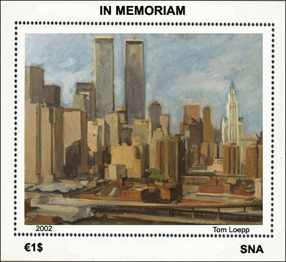

|
IN MEMORIAM The new SNA sheet, dedicated to the one year commemoration of the WTC tragedy, features a painting (detail) of the SNA artist Thomas Loepp. The SNA Press Centre had the privilege to obtain an exclusive interview with the artist, in which he narrates the history of this painting and of other, related works. Please read below his answer to the question how and why the work presented below came into existence.
 A plein air painter such as I goes outside and finds a place to paint. From that painting and place comes the idea for the next location and on and on. I had been painting outside in the streets New York City for some 15 years with a year in Europe, always looking for the unique vantage point. When I painted that painting (I did seven total) it was an exciting experience. Probably the most exciting time for me in New York City. I had always enjoyed painting from New York's bridges and likened it much to the cliffs and canyons of my youth in Wyoming. I talked my way up to the top of the bridge during the changing of the vertical and lateral cables. One had previously snapped and killed a tourist. Being up there was exhilarating, the ironworkers who worked on many skyscrapers and bridges loved their jobs. The Brooklyn Bridge is an engineering marvel and the technology used to replace the cables was equally amazing as the old cables couldn't be removed until new ones were attached. A new bracket system had to be designed and placed above the old ones in the tops of the towers. Laser technology was used to establish the proper tension and settling of the roadway.
When I first approached the company that was renovating the bridge they allowed me permission to paint on the pedestrian walkway only. I asked if I could go to the top and they said "no". When I arrived on the walkway I was to give a signed waiver of liability to the foreman. When I found him he asked what I was going to paint. I said the workers and views. He said that I should see the view from the top. I explained that I had asked the company heads about that and that it was not possible. He said "... them, they never come up here!" and he sent my equipment up and I scaled the inner ladders of the tower. Upon first arriving at the top I was shaking with a mixture of fear and excitement. I couldn't believe that in a matter of one hour I had succeeded in accomplishing the impossible task of getting on top of such a great landmark. The views of the city were spectacular and the workers were excited by my experiencing and painting what they do. I returned everyday for a month up to the near completion of the cable changing. Everyday I would walk across the bridge with the people heading to Manhattan but at a certain point I would step over the railing and start the four minute walk up one of the 16 main cables to the top. New York Newsday printed a Peter B. Kaplan photograph of me up there. The experience became legend among the plein air painters of the city. From there I decided to go next to the highest point in my view, the World Trade Center. And that is another long story. Thanks a lot, Tom, for the interview, and also for the kind permission to use your painting on a SNA issue. The presented sheet isn't obtainable on the philatelic market. The unique piece, shown above, is exhibited at the SNA Postal Museum. Link: Tom Loepp Retrospective Exhibition in Ciudad de Leon, 2003
|